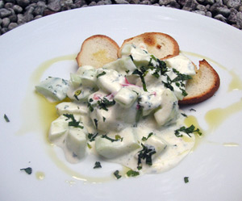

Gurkenjoghurt-Salat nach Jamie
5 von 6Halbieren Sie die Gurke längs in zwei Teile. Entfernen Sie die Kerne, zerkleinern Sie sie und vermischen Sie alles in einer Schüssel mit dem Naturjoghurt. Schmecken Sie den Joghurt (300 g) mit dem Zitronensaft, der halben, zerkleinerten Chili-Schote und einem Bündel Minze sowie ein paar Tropfen Olivenöl und etwas Salz und Pfeffer ab. Mit Toast servieren.
